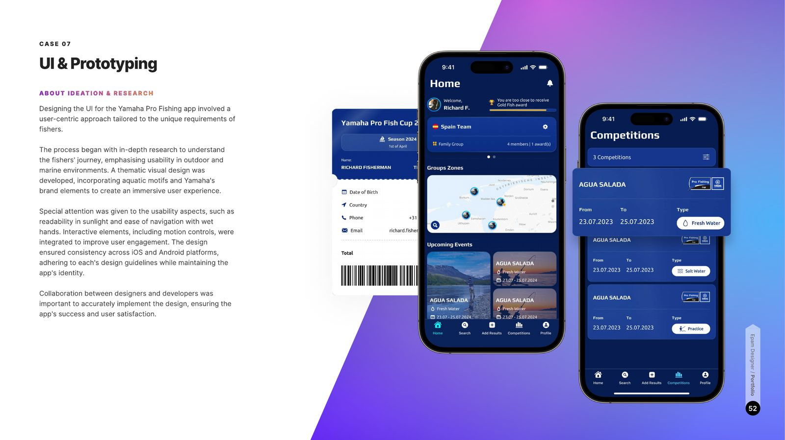

A digital hub for anglers in Yamaha-sponsored tournaments: registration, live updates, and leaderboards in one seamless experience. The redesign concept streamlined registration and tournament management, added real-time updates, and aligned the product with Yamaha's brand — with community features and educational resources built in.